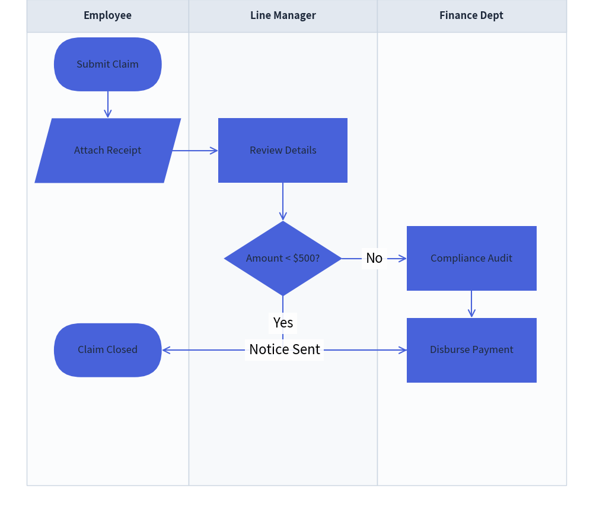
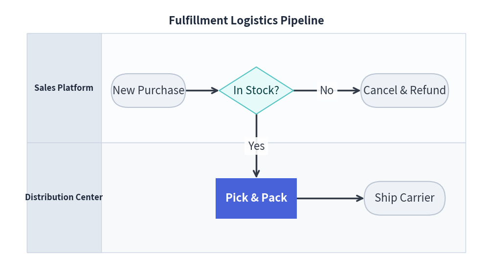

FlowDiagram: ISO Flowcharts & Cross-Functional Swimlanes
FlowDiagram implements standard flowchart symbols according to ISO 5807 and JIS X 0121 standards, with native support for cross-functional swimlane layouts (vertical columns or horizontal rows) sharing a unified global coordinate plane.
1. Overview & Standard Symbols
Lane: Customer Lane: Gateway Lane: Warehouse
┌───────────────────────────┬───────────────────────────┬───────────────────────────┐
│ (Start) │ │ │
│ │ │ │ │
│ ▼ │ │ │
│ [Submit Order]───────────►│ <Payment Valid?> │ │
│ │ │ │ (No) │ │
│ │ ▼ (Yes) ▼ │ │
│ │ │ [Show Error] │ │
│ │ ▼ │ │
│ │ └─────────────────────►│ [Pack & Ship] │
└───────────────────────────┴───────────────────────────┴───────────────────────────┘
Flowchart Symbol Classes
| Class | Shape Geometry | Default Size ($W \times H$) | Standard ISO Usage |
|---|---|---|---|
Start |
Stadium / Pill (r=5.0) |
20.0 x 10.0 |
Initial entry point |
End |
Stadium / Pill (r=5.0) |
20.0 x 10.0 |
Terminal completion point |
Process |
Rectangle | 24.0 x 12.0 |
Execution task, calculation, or step |
Decision |
Rhombus / Diamond | 22.0 x 14.0 |
Conditional branch (Yes/No, True/False) |
Data |
Parallelogram | 24.0 x 12.0 |
Input, output, or file I/O |
Junction |
Coordinate point | 0.0 x 0.0 |
Wire tap, waypoint, or merge junction |
Lane |
Boundary container | Dynamic | Swimlane column or row |
2. Global Coordinate Architecture
In Drawlib's FlowDiagram, swimlanes provide a structured visual background and column/row headers without trapping nodes inside local relative coordinates.
All nodes share a single global canvas coordinate system. This means:
- Steps occurring at the same stage in different departments can be placed at the exact same vertical $Y$ coordinate.
- Connecting lines cross swimlane boundaries cleanly with automatic orthogonal right-angle routing.
3. Vertical Swimlanes: Approval Workflow
The following example illustrates a multi-department expense reimbursement process across three vertical swimlanes:

4. Horizontal Swimlanes: Order Logistics
By specifying lane_orientation="horizontal", lanes are laid out as stacked horizontal bands:

5. Best Practices & Guidelines
- Explicit Decision Exits: Always specify
start_side(e.g.start_side="right"for "No",start_side="bottom"for "Yes") onDecisionnodes to keep branch directions clear and consistent. - Merge with
flow.junction: When multiple paths lead to a single destination or pass through a bottleneck, route them through an intermediate junction to prevent crossing lines. - Lane Width Balancing: Ensure lane widths accommodate the widest nodes with at least 5 coordinate units of padding on either side.